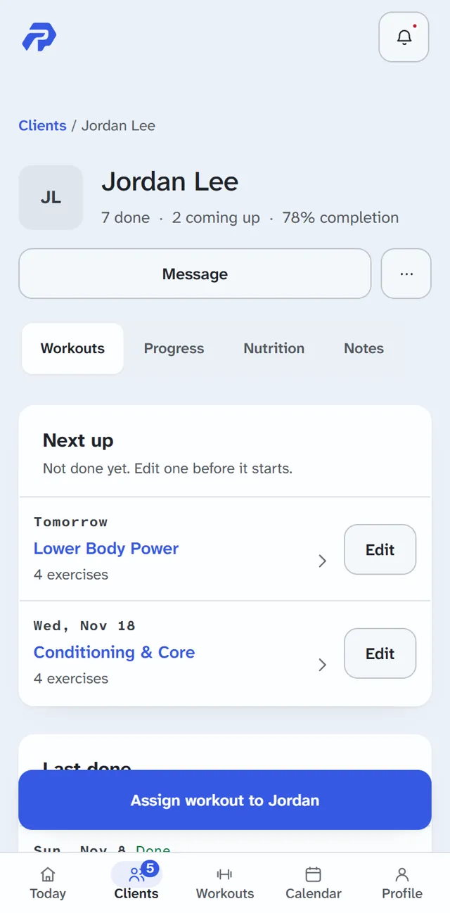
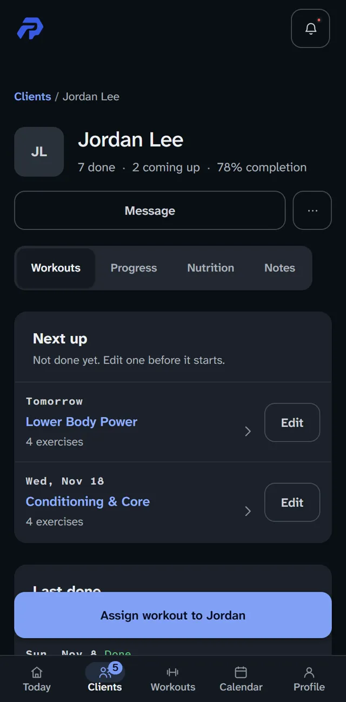
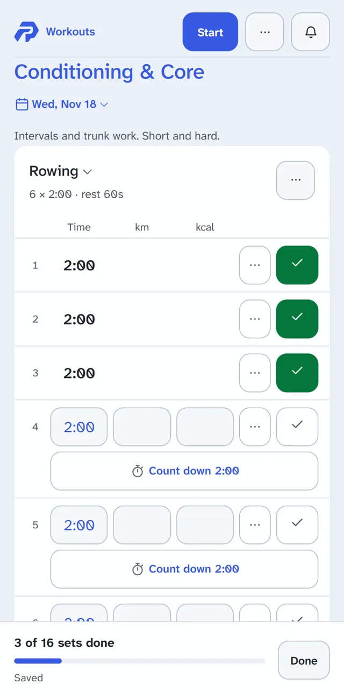
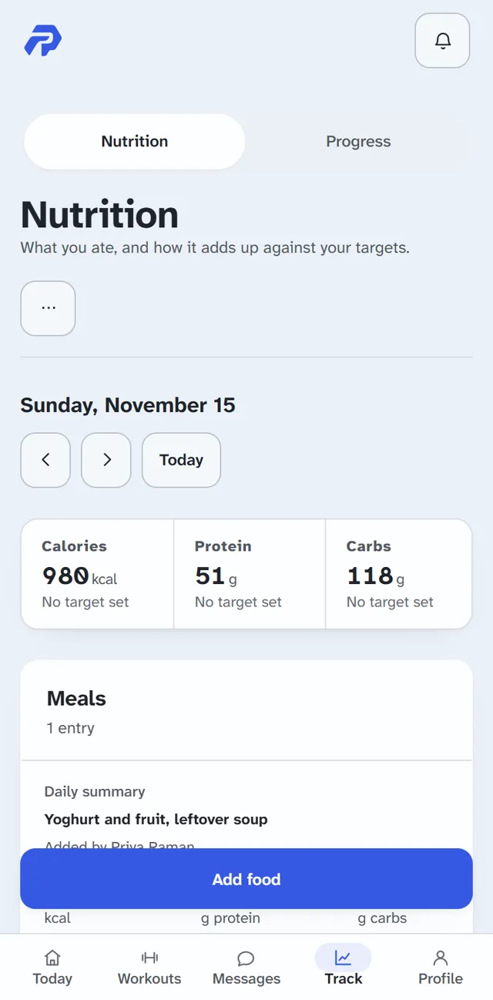
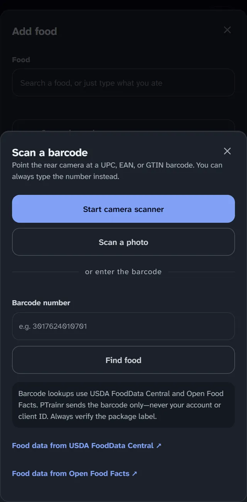
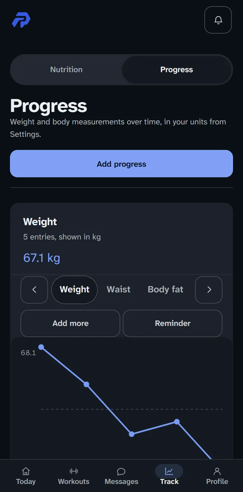
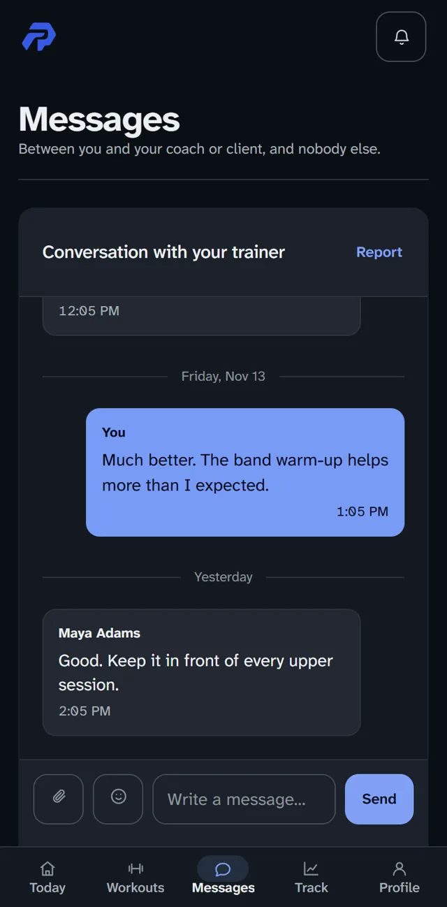

A coach writes it in blue. A client fills it in.
PTrainr is a training app for coaches and the people they train. The coach builds a workout once and assigns it; the client logs it set by set, from a phone, between sets. It runs on the web, Android and iOS, and it is in a private pilot.
Every screen on this page is the real app, signed in to a seeded demo account. Maya, Jordan and Priya are invented, and so are their numbers.
What Maya, the coach, sees


What her client fills in


The logger, built for one hand
Prescribed: 6 × 2:00, rest 60 s
The one screen used out of breath. The coach's targets are already in each row, in blue. A tap on the tick logs the set as written; a different number replaces it in graphite. The footer never moves, and every set saves as it is ticked.
With no signal the sets wait on the phone and go up in order when it returns, each with a key so nothing is counted twice.


Meals, with a barcode scanner
Prescribed: log what you ate
A day's meals first, the totals in one line above them. Food comes from a search, a typed line, or the camera pointed at a barcode, which is looked up in USDA FoodData Central and Open Food Facts. Only the barcode leaves the phone.
A coach sees meals only while the client shares that category, and the client can stop sharing at any time.




Progress and a line to the coach
Prescribed: weigh in, say how it went
Weight and body measurements keep the unit they were entered in and are never overwritten. The charts are drawn in CSS by hand. Messages are between one client and one coach, with photos and PDFs, and nobody else.
PTrainr is a coaching tool, not a medical one: it records numbers and never calls one high or low.




The coach's side of the desk
Prescribed: five clients, one page each
A roster, and a page per client: what is coming up, what was done, and every set they logged. A workout is built once from a library of exercises and assigned to one client or several; changing it later never rewrites what somebody already did.


Two inks: how it came to look like this
Prescribed: stop looking generated
In October the whole app was photographed, 990 screenshots, and audited. Seven worlds were considered, three were drawn as working mock-ups, and one was picked: a paper training log. A pale desk, white sheets, and two inks. Blue is always the coach. Graphite is always what the client did.
The type is Atkinson Hyperlegible, made for low-vision readers, which is how anyone reads mid-set. A person can swap the blue for teal, violet, magenta or graphite; the coach's ink stays blue on every phone.

One app, three times, kept the same
Prescribed: no drift
The website is the source of truth; the Android app (Kotlin, Compose) and the iOS app (SwiftUI) copy it screen for screen. A check reads all three codebases and fails when a tab, a row, a word or the brand colour differs, and a scoreboard grades every screen on each platform. The web app itself is plain JavaScript with no framework and no build step, on a Node server with two dependencies.
- Screens graded on each platform
- 63
- Languages, two of them right to left
- 191,976 strings each
- Automated checks
- 64plus 23 unit suites
- Runtime dependencies on the server
- 2
Sign-in is written by hand too: passwords, two-factor codes, passkeys, and Google, Microsoft and Apple, with no auth library. Health data is private by default, shared per coach and per category, and the staff dashboard can see accounts but never a workout, a meal or a measurement.